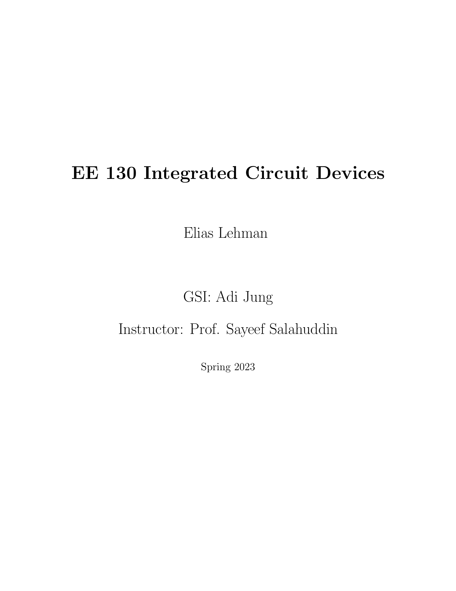

Hello and welcome to my website. Below you'll find my porfolio of projects.
Professional inquiries may contact me at eliaslehman@berkeley.edu.
Resume | LinkedIn
About Me
Born at Berkeley Alta Bates in 2002, Elias Lehman lives in the East San Fransisco Bay Area.
In 2014, he took a course in the UC Berkeley Valley Life Sciences Building, begining his journey on campus.
It wasn't until 2020 that Elias made Berkeley his formal academic institution and began studying Physics and Electrical Engineering.
Elias's research spans from quantum-limited amplifiers to cosmology with machine learning.
He currently working with the Advanced Quantum Testbed at Lawrence Berkeley National Laboratory and the Bay Area Envionmental Research Institute.
Projects
While at the Institute for Quantum Computing in Waterloo, Ontario I wrote several suplemental reports to assist the Lupascu group in their research of superconducting qubits.
IQC Internship
Summary Report
Circuit Mapping (Supplemental)
Decoherence (Supplemental)

{kind=link}

EE130 Final - MOSFET Simulation
My final project to EE130: Integrated Circuit Devices was to simulate and analyze the properties of a given MOSFET architecture.
EE130 Final - MOSFET Simulation
View

The final project for CS191: Quantum Computing. I worked on a synopsis of the Transmon qubit, heavily inspired by the 2007 Koch et al. paper.
CS191 Final - Transmon Review
View

A project done in Winter 2022 with the Quantum Open Source Foundation. Our team implemented an adaptive gradient descent for hybrid quantum-classical computing using IBM's qiskit library in Python.
Quantum Open Source Foundation - Adaptive Gradient Descent
Slides

I delivered this poster presentation as a final deliverable for the Berkeley Physics Undergraduate Research scholarship.